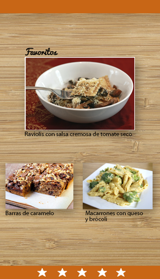

<section id="favoritos" data-transition="fade">

    <!-- Encabezado -->
        <header>    
                <nav>
                            <button data-view-aside="menu" data-icon="menu"></button>
                    </nav>
                    <nav class="on-right">
                        <button data-view-aside="um" data-icon="user"></button>    
                    </nav>                     
        </header>

    <!-- Cuerpo -->        
           
                 

</section>